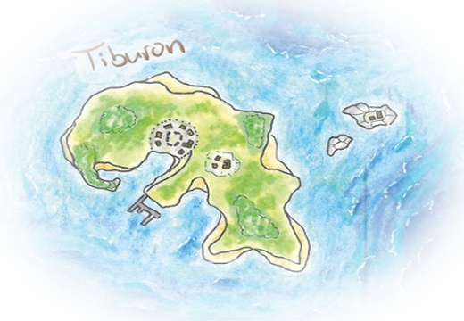
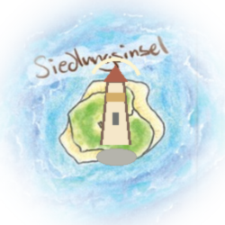
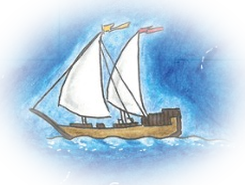

Seekarte · Grafik-Abnahme
Unabhängige visuelle Testseite für die künftige Grafikbibliothek. Die Meeresfläche und der Rand sind hier ein austauschbarer SVG-Entwurf. Die drei Motive stammen vorläufig noch aus dem unveränderten Prototyp 3.6; die neuen Aquarell-Cutouts sind nicht in diesem Branch enthalten.



Dies ist keine zweite Spielversion. Das spielbare 0.1 bleibt unter /. Die Positionierung und Größen sind bewusst isoliert testbar; keine Spielregeln oder Eingaben werden verändert.